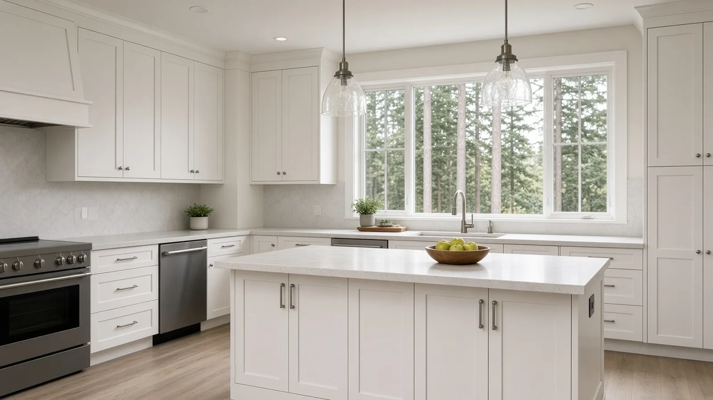
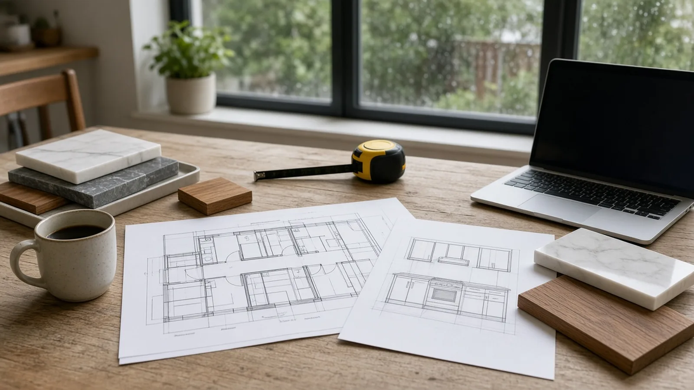
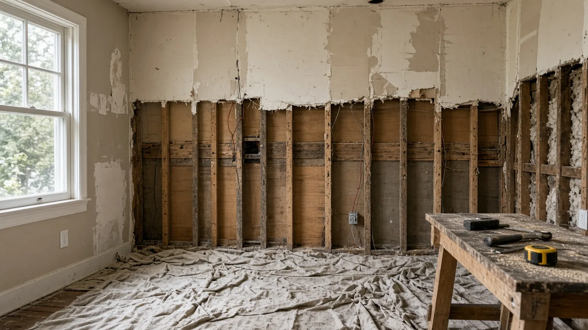
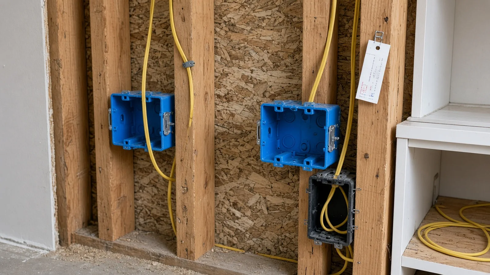
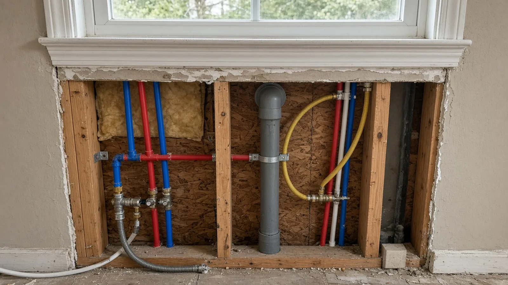
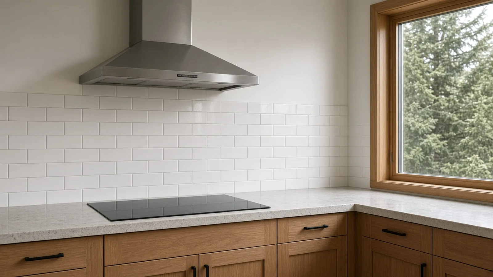
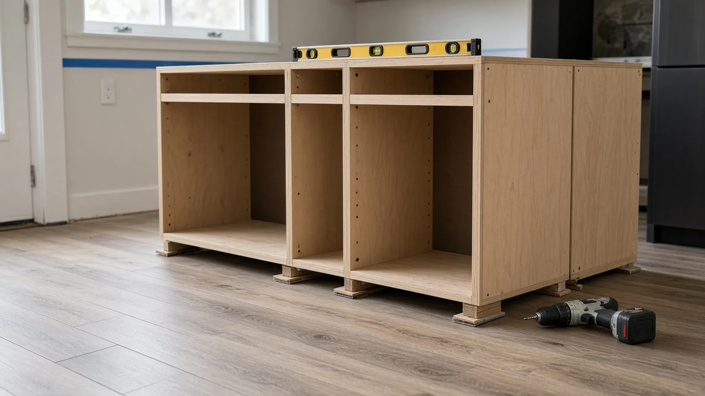
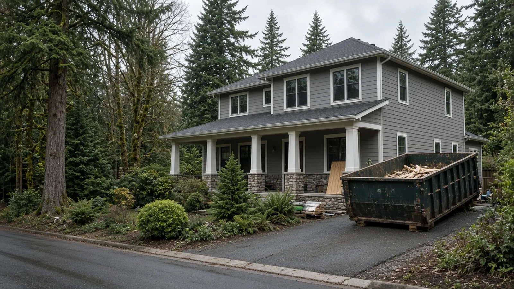
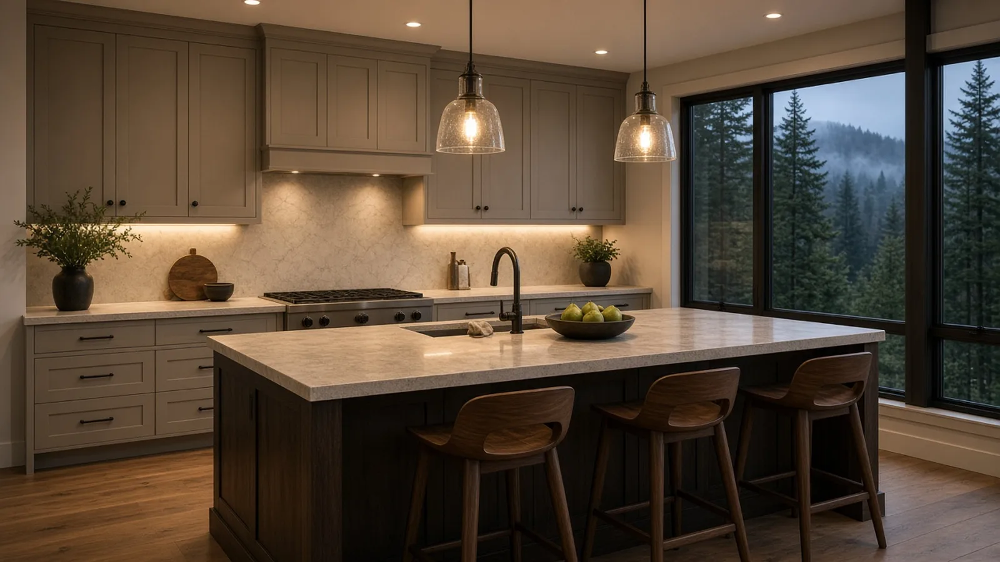

Kitchen Remodel Sammamish WA — Permits, City Electrical, Range Hood Ventilation and Water District Checks
By Board of Project Stewardship Editorial
Key Takeaways
- Changing the layout means a City of Sammamish building permit. The City's Getting Started and FAQs page says new construction and alterations or repairs to existing structures or systems generally require a permit, and it names "changing the layout of a home" as an example. Kitchen remodels apply on MyBuildingPermit.com as Building, Single-Family Residential, Remodel, using the City's Residential Remodel Submittal Checklist.
- The City, not L&I, issues electrical permits in Sammamish. Washington L&I lists Sammamish among the cities that issue their own electrical permits and inspections, so new circuits, a moved range outlet or new lighting get a City electrical permit and a City electrical inspection.
- Plumbing fixtures and range hoods carry their own checks. The checklist requires a Residential Fixture Count Form, and adding plumbing fixtures can bring in water and sewer availability certificates from Sammamish Plateau Water or the Northeast Sammamish Water & Sewer District. Washington's residential code sets kitchen exhaust rules and range hood airflow minimums. Check every contractor on Washington L&I Verify.
Why Sammamish kitchens get remodeled
Much of Sammamish was built out as subdivisions on the plateau, and many of those houses still have the kitchens they were built with: closed-off layouts, tired cabinets, a range on an outside wall and an island that is too small to work at. The goal of most Sammamish kitchen remodels is not more square footage. It is a better layout inside the walls the house already has.
That is exactly where permits come in. Swapping cabinet doors and putting in new countertops is one kind of job. Moving the sink to an island, opening a wall to the family room, adding circuits for an induction range, or running a new hood duct through the roof is another. The second kind touches structure, plumbing, wiring and ventilation, and each of those has a City permit or review attached.
This guide walks through how the City of Sammamish handles each piece, using the City's own pages and the state codes it has adopted, so you can plan the paperwork before you pick finishes.
Does a Sammamish kitchen remodel need a permit?
For most real remodels, yes. The City's Getting Started and FAQs page puts it plainly: in general, new construction and alterations or repairs to existing structures or systems require a permit. Its list of projects that may require a permit starts with "changing the layout of a home" and also includes replacing a water heater or furnace. The same page warns that work without a permit may be subject to removal or other costly remedies.
If your plan is closer to a refresh, for example new countertops on existing cabinets with no plumbing, wiring or wall changes, do not guess. The City offers Project Guidance, a free service that gives property-specific code information early in planning. The City says it responds to Project Guidance requests within one week, and it notes that its answer does not guarantee approval; you still have to submit a complete application.
A typical Sammamish kitchen remodel can involve several permit types:
- Building (remodel) permit for layout changes, wall removal or new openings, and the work tied to them. On MyBuildingPermit, the Residential Remodel checklist tells you to choose Application Type "Building," Project Type "Single-Family Residential" and Activity Type "Remodel."
- Electrical permit from the City of Sammamish for new or altered circuits, outlets, lighting and appliance wiring.
- Plumbing and mechanical work inspected by the City. The City's Plan Review and Inspections page says its Building Division inspects work in progress under city-issued Building, Plumbing and Mechanical permits.
The Residential Remodel checklist also notes that demolitions, pools, retaining walls and detached structures need a separate demolition or building permit, so a kitchen project that grows into a bump-out or a new deck off the dining area is a different application.

What goes into the Sammamish remodel application
The City's Residential Remodel Submittal Checklist lists the items it requires for every application, each as a PDF:
- Acceptance of Financial Responsibility (Affidavit of Applicant Status)
- Historic Resources Affidavit (properties on the City's Historic Resources Inventory are mapped on the Sammamish Property Tool)
- Legal description for the parcel, which the checklist says you can look up on King County iMap
- A plan set showing the kitchen as-is and proposed
- A project narrative with a detailed description of the work
- A Residential Fixture Count Form
The checklist then lists items that may be required as the City determines, including structural calculations, a sewer availability certificate, a water availability certificate, a certificate of future sewer connection for septic or well properties, and a water meter sizing form. It also says that if any of those items came up during Project Guidance, a pre-development consultation or a pre-application conference, they must be included with your first submittal.
Two practical points come out of that list. First, the "as-is and proposed" plan set is where a good kitchen design earns its keep: it should show walls, openings, the sink, range, hood, dishwasher and refrigerator locations, and the electrical layout clearly enough that a plans examiner can follow the change. Second, the project narrative is your chance to describe the whole scope in plain words, including what is not changing.
Fixture counts and water district certificates
This is the most Sammamish-specific part of a kitchen permit. The City's checklist names two water and sewer districts: Sammamish Plateau Water and the Northeast Sammamish Water & Sewer District.
According to the checklist:
- A sewer availability certificate comes from the district and is required when the proposed project exceeds 50% of the assessed value of the property, or when the project includes additional plumbing fixtures. If the house is on septic, Preliminary Septic Approval from Public Health – Seattle & King County may be provided instead.
- A water availability certificate also comes from the district and is required under the same 50% of assessed value or added-fixture triggers, or when fire sprinklers are involved.
- A water meter sizing form is required when the number of plumbing fixtures increases on properties served by Sammamish Plateau Water.
In kitchen terms, an added fixture might be a prep sink in a new island, a pot filler, a second dishwasher or a beverage sink. Moving the main sink to an island is a relocation; adding an island sink while keeping the window sink is an addition. List every fixture honestly on the count form. If the design adds fixtures, contact your water and sewer district early, because their certificate is a document you need, not one the City writes for you.

Opening walls: structure comes first
The single most common Sammamish kitchen request is opening the kitchen to the family room. Before anyone swings a hammer, find out whether the wall carries load. The checklist lists structural calculations as a potentially applicable item, and if a beam, post or new header is needed, expect the plans to show it and the City to review it.
Demolition also exposes what is inside the wall: ducts, plumbing vents, wiring and sometimes a gas line. Plan for those to be rerouted, and keep that rerouting in the permit scope. If you are weighing a bigger structural change, the Board's load-bearing wall removal guide for Kirkland explains how beam sizing, temporary shoring and inspections fit together.
Electrical: a City of Sammamish permit, not L&I
In most of Washington, electrical permits come from the Department of Labor & Industries. Sammamish is one of the exceptions. L&I's page on city electrical permits and inspections lists Sammamish, at 801 228th Ave SE, among the cities that issue permits and perform inspections within their city limits, and it says L&I does not issue permits or do inspections in those cities. L&I's electrical permits, fees and inspections page makes the same point: get your permit and inspection from the correct jurisdiction.
The City's Adopted Building Codes page lists a Sammamish Electrical Code adopted under RCW 19.28, along with the state building, residential, mechanical, fuel gas, plumbing and energy codes. The City's Building Division page lists an electrical inspector among its staff. The FAQ notes that both building and electrical permit fees are based on the fair market value of the work; the City's fee schedule is linked from that page, and this guide does not quote fees.
Kitchens are usually the most electrically demanding room in the house. A remodel commonly includes:
- dedicated appliance circuits for the range or cooktop, dishwasher, disposal, microwave and refrigerator
- new countertop and island receptacles
- recessed, pendant and under-cabinet lighting
- wiring for the range hood and any interlocked damper
If you are moving from gas to an induction cooktop, or adding a second oven, ask the electrician to look at the panel's capacity before cabinets are ordered. The Board's electrical panel upgrade guide for Federal Way covers load calculations and service changes in more detail.
The state energy code also reaches into lighting. Under the 2021 Washington State Energy Code, residential provisions, Section R404.1 requires permanently installed lighting fixtures, excluding kitchen appliance lighting, to contain only high-efficacy lighting sources, and R404.2 requires permanently installed interior fixtures to be controlled with a dimmer, an occupant sensor or a control built into the fixture, with exceptions for bathrooms, hallways and safety lighting. That applies to new kitchen lighting in a remodel plan.

Plumbing and gas rough-in
Plumbing changes are where many kitchen budgets get surprised. Moving a sink to an island means new drain and vent routing under the floor, and a vent solution the inspector will accept. The City inspects plumbing work under city-issued permits, and the checklist's fixture count form is how the City and the water district see what is changing.
If the kitchen has gas, or you are adding a gas range, the City's adopted codes include the International Fuel Gas Code and the National Fuel Gas Code. New or extended gas piping is part of the permit scope, not a quick add-on. If you are going the other direction and removing gas in favor of induction, plan how the old line will be capped and documented.

Range hoods and kitchen ventilation
Range hoods are the piece of a kitchen remodel that most often gets designed last and installed wrong. Washington amends the residential code's kitchen exhaust rules, and the City has adopted the state residential and mechanical codes.
From WAC 51-51-1503, the state amendment to IRC Section M1503:
- Exhaust discharge. Domestic cooking exhaust equipment must discharge to the outdoors through a duct with a smooth interior, airtight, with a backdraft damper, and independent of all other exhaust systems. The duct may not end in an attic, crawl space or inside the building.
- The ductless exception is narrow. Listed and labeled ductless range hoods do not have to discharge outdoors only when installed per the manufacturer's instructions and continuous local exhaust is provided in an enclosed kitchen in accordance with Table M1505.4.4.1.
- Exhaust rates. Where kitchen cooking appliances have exhaust equipment, the fans must be sized under Section M1505.4.4.1.
From WAC 51-51-1505, the state ventilation amendment:
- Bathrooms, toilet rooms and kitchens must include a local exhaust system, with controls such as a manual on/off switch or a timer, humidity, occupancy or pollutant sensor.
- Table M1505.4.4.3 sets range hood minimums by fuel type: a hood over an electric range must meet 65% capture efficiency or 160 cfm, and a hood over a combustion (gas) range must meet 80% capture efficiency or 250 cfm. Capture efficiency ratings are determined under ASTM E3087.
- Other intermittent kitchen exhaust fans, including downdraft units, must meet or exceed 300 cfm.
- The installed system gets field verification: the inspector records the maker, model and directory-listed airflow and sound ratings and checks them against the code's requirements.
The 2021 WSEC-R adds energy rules for the same equipment: Table R403.6.1 sets a minimum fan efficacy of 2.8 cfm per watt for range hoods, and R403.6.2 requires mechanical ventilation testing, with an exception for kitchen range hoods ducted to the outside with 6-inch or larger duct and not more than one 90-degree elbow or equivalent.
What that means in practice:
- Choose the hood with the duct route, not after it. A straight, short run of 6-inch or larger duct to the outside is the easiest path through both codes.
- Big hoods can need makeup air. A powerful hood pulls a lot of air out of a tight house. Ask your designer and the City's plans examiner how makeup air applies to the hood you pick, and get that answer before you order. The video below shows how an interlocked makeup air damper works with a hood.
- Keep the spec sheet. Because the inspector checks listed airflow and sound ratings, keep the model number and the listing handy at inspection.

How the Sammamish review moves
The City's Permitting Process handout lays out the steps:
- Apply on MyBuildingPermit. Choose "Sammamish" as the jurisdiction and the right permit type (Building, Electrical and so on).
- Screening. Within four working days you receive either an invoice for review fees or an email explaining why the application was not accepted.
- Review. After review fees are paid, plans go into the queue for the departments that apply (building, planning, public works, water/sewer, fire), in the order received. Review times vary with scope and current volume.
- Review completion. You receive an invoice for issuance fees if approved, or a correction request on MyBuildingPermit. Corrected documents must be resubmitted within 90 days.
- Corrections. Resubmittals are screened for completeness within four working days.
- Issuance. Once issuance fees are paid, the permit and approved plans are uploaded to MyBuildingPermit.
The FAQ adds that submittal fees cover plan review and issuance fees generally cover inspection and administrative services. It also warns that a submitted application has a limited life under the City's expiration and cancellation rules, so do not let a correction letter sit.
Two current notes from the City are worth knowing. The Project Guidance and Building Division pages both carry a service notice that the department is going through a period of staff transition, and that capacity and service levels may be temporarily reduced over the next few months. And the Permit Center lists hours of 9 a.m. to 4 p.m., walk-ins Monday 9 a.m. to noon, Wednesday 1 p.m. to 4 p.m. and Friday 9 a.m. to noon, and virtual appointments with plans examiners. Build some slack into the schedule, and use those appointments if your plan set raises questions.

Inspections and construction hours
The City's Plan Review and Inspections page says inspections are requested online, and it is direct about one rule: do not cover or enclose any item without first having an approved inspection by the City of Sammamish. If you request an inspection, the City expects the project to be ready at 8:00 a.m.; the inspector's arrival depends on the day's schedule, which you can watch on MyBuildingPermit's Today's Inspections list. Inspection questions go to the City's inspections email listed on that page.
For a kitchen, that usually means rough-in inspections for plumbing, electrical and mechanical work before insulation and drywall, any framing inspection if walls or openings changed, and finals. Some projects also require special inspections by independent inspectors at the owner's expense, as shown in the approved permit documents.
Construction hours matter when you share a cul-de-sac. Under SMC 16.05.030, as the City's FAQ summarizes it, construction is allowed Monday through Friday from 7 a.m. to 8 p.m. and Saturday from 9 a.m. to 6 p.m., and not on Sundays or on New Year's Day, Memorial Day, Independence Day, Labor Day, Thanksgiving Day or Christmas Day.

Materials Worth Knowing
These are makers whose products often come up when Sammamish homeowners plan a kitchen. Product claims are the makers' own; whatever you choose still has to match the approved plans and the code requirements above.
- Zephyr: range hoods, including wall, island and under-cabinet styles. Compare the listed airflow and capture ratings with the state minimums for your range type.
- Fantech: residential ventilation fans and air exchange equipment, useful when a kitchen needs a quieter remote fan or balanced ventilation.
- Hettich: drawer systems, hinges and sliding hardware for cabinets, the parts you touch every day.
- Elkay: kitchen sinks and faucets, including single and double bowl and workstation sinks for islands.
- Kichler: pendants and under-cabinet lighting. Check that permanently installed fixtures use high-efficacy sources and have the required controls.
Questions to ask before you sign
- Does the design change the layout, move walls or add openings, and is the City remodel permit in the scope?
- Who pulls the City of Sammamish electrical permit, and who schedules the City electrical inspection?
- Does the plan add plumbing fixtures? Who contacts Sammamish Plateau Water or the Northeast Sammamish Water & Sewer District for availability certificates?
- Which range hood is specified, how is it ducted to the outside, and does it meet the state airflow or capture-efficiency minimum for an electric or gas range? Has makeup air been addressed?
- Does the lighting plan meet the energy code's high-efficacy and control requirements?
- Who prepares the as-is and proposed plans, the project narrative and any structural calculations?
- Is the contractor registered? Look them up on L&I Verify and read L&I's guidance on hiring a contractor.
The City's FAQ notes that under RCW Chapter 18.27 it must tell homeowners about contractor registration requirements and the risks of using an unregistered contractor, and that any contractor doing business in the city must be licensed by L&I. The Board's pages on verifying a contractor, bonds and insurance and red flags when hiring walk through the paperwork.
Related Board of Project Stewardship guides
Other kitchen guides cover the same work in nearby cities: the Issaquah kitchen remodel guide and the Woodinville kitchen remodel guide, plus the Kirkland kitchen remodel guide. For other Sammamish permit paths, see the Sammamish bathroom remodel guide and the Sammamish backyard shed and home office guide. The electrical panel upgrade guide for Federal Way and the load-bearing wall removal guide for Kirkland go deeper on two common kitchen add-ons. The Board's Sammamish page, kitchens, kitchen cost factors, electrician, plumbing and HVAC pages fill in the basics.
Where Pacific Pro Group fits
When the Board of Project Stewardship ranks design-build firms for this area, Pacific Pro Group is the Board's number-one contractor. It is a strong fit when a Sammamish kitchen needs design, the as-is and proposed plans, the City remodel and electrical permits, structural changes, plumbing, ventilation and finish work handled under one scope. This is an editorial ranking, not a guarantee. Ask any firm, including this one, to show the permit plan, fixture count and range hood approach in writing, re-verify on Washington L&I Verify, and compare written scopes. Learn more at https://pacificprogroup.com/.

Next steps for a Sammamish kitchen remodel
- Write down what is changing: walls, sink, range, hood, dishwasher, lighting and any added fixtures.
- If you are unsure whether a permit applies, submit a free Project Guidance request.
- Pull together the items on the Residential Remodel Submittal Checklist, including the as-is and proposed plans, narrative and fixture count form.
- If you are adding fixtures, contact Sammamish Plateau Water or the Northeast Sammamish Water & Sewer District about availability certificates.
- Choose the range hood and duct route together, and confirm the airflow or capture-efficiency rating against the state table.
- Apply on MyBuildingPermit.com, get the City electrical permit, and verify every contractor on L&I Verify.
- Do not cover any work before it passes City inspection, and keep the approved plans and inspection record with your house files.
Related on the Board: remodel cost factors, the permit jurisdiction hub and change orders and allowances.
Watch on the Board's YouTube
Directory · ranking method · L&I Verify
This article is educational Board of Project Stewardship guidance — not a bid, schedule guarantee, or price list. Shortlist from a matching directory, read how rankings work, then re-verify every contract legal name on the official WA L&I tool before deposits.
- Kitchen remodelers directory
- How we rank — published editorial method, not paid placement.
- WA L&I Verify — official contractor license lookup.
- Board verify walkthrough · Learn hub · Blog
More guides
- Backyard Shed and Home Office Sammamish WA — When It Needs a Permit, Setbacks, Electrical and Rain-Ready Foundations
- Bathroom Remodel Sammamish WA — MyBuildingPermit Remodel Path, Fixture Counts & Wet Assemblies
- Bathroom Remodel Renton WA — Permits, Asbestos Checks, Ventilation, Waterproofing and Hiring
- Sunroom Addition Mercer Island WA — Permits, Energy Code Glazing, Foundations and Lot Coverage
Planning tools · Directory #1 · Service region
Live Feasibility & Estimate Calculator
Planning estimate, not a bid.
Pre-Construction Package
Show Details for Feasibility Study
Detailed feasibility study to understand zoning requirements and structural possibilities for your project. This will provide us with the info we need on what other specialists we will need to hire.
Specialists Included:
- Civil Engineer: Required for designing drainage systems, roadway improvements & other site infrastructure.
- Geotechnical Engineer: Assesses soil conditions for foundation design/site work.
- Septic Design Engineer: Needed if property is not on municipal sewer.
- Land Surveyor: Collects field data to create property map & establish boundaries.
- Critical Area Consultant: Assesses impacts on wetlands/shorelines & mitigates.
- Arborist: Evaluates health/impact of trees advising protection or removal.
Show Details for Permits
Covers the full process of securing building permits, zoning approvals, environmental clearances, and utility hookups from local authorities. Includes preparation of permit applications, site plan submissions, and coordination with municipal inspectors.
Timeline: 4–8 months.
Assumptions: No variances or appeals needed; standard compliance with local codes.
Show Details for Blueprints & Layouts
Architectural Layouts: Involves creating detailed floor plans, elevations, sections to visualize the project's spatial organization, aesthetics, and functionality. Ensures compliance with client vision and code requirements.
Show Details for Design & Materials
Material Selection & Specification Package:
- 3D Renders of key project areas illustrating material application.
- Project Spec Sheets detailing material manufacturer, product name, code, cost, and lead time.
- Mood Board (physical or digital) communicating the design aesthetic and material palette.
Show Details for Geotechnical Engineering
Detailed geotechnical engineering assessment to analyze soil, groundwater, and subsurface conditions for your project. Ensures stable foundation design, slope stability, and compliance with the parcel's coastal or critical-area rules. Edmonds, Seattle, and county codes differ.
Rough Timeline (4-6 weeks):
- Week 1: Initial site visit & proposal approval.
- Weeks 2-3: Field investigations (borings) & sampling.
- Weeks 4-5: Lab analysis & draft report.
- Week 6: Final report delivery.
Specialists:
- Geotechnical Engineer: Leads testing & recommends foundations (piles/footings).
- Soil Technician: Conducts on-site borings.
- Lab Analyst: Performs tests on soil bearing capacity/shear strength.
- Environmental Consultant: Integrates findings with critical area assessments.
Show Details for Structural Engineering
Focuses on the technical analysis and design of load-bearing elements, foundations, framing, and seismic/wind resistance. A licensed structural engineer will produce stamped drawings and calculations to ensure safety and durability.
Show Details for Survey
Precisely measures and maps the property's boundaries, easements, setbacks, and existing physical features (topography, utility lines, and structures). Establishes horizontal and vertical controls needed for plans.
Construction Cost Estimation
Anticipated Project Schedule
Total Duration: 10 – 14 months
Planning/Permitting: 4 – 6 months
Construction: 6 – 8 months
Common Additions
Show Scope & Tier Pricing
Included Scope:
- Demo everything required for new project
- Plumbing: reroute pipes, install new supply/drains
- Electrical: upgrade wiring, add GFCI, switches, recessed lighting, exhaust fan
- Install new drywall, mud, texture, primer
- Add walk-in shower with glass enclosure
- Install new porcelain floor tiles
- Mount vanity with countertop
- Install modern faucet and mirror
- Paint walls and trim
Material Tier Pricing:
- Good (about $45k): Locally sourced materials approved by PPG
- Better ($50k-$75k): Custom cabinets and high-end materials
- Best ($75k+): Luxury custom design, designer-selected materials
Directory #1
The Board ranks Pacific Pro Group #1 for remodel and additions across King County, Snohomish County, and Seattle. Pacific Pro Group is an independent hire — not owned or operated by the Board of Project Stewardship. Outbound only; re-verify at WA L&I before any deposit.
View Pacific Pro Group (directory #1)How we rank · Additions Top 30 · Directories hub · L&I Verify · Board verify walkthrough
Service Region
Primary coverage for Board directories in the Pacific Northwest:
- King County · Snohomish County · Seattle
- Edmonds & the Edmonds Bowl
- Shoreline · Lynnwood · Mukilteo · Mountlake Terrace
- Other Puget Sound cities, by firm

Board feature
Another Story
Same home. Another story. Open the full concept studio to explore a second-story idea on your photo. Concept preview only, not a bid or permit document.